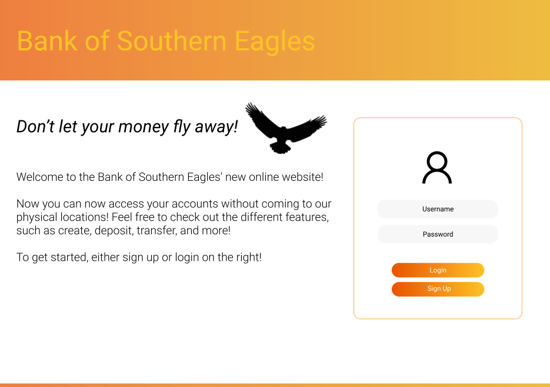
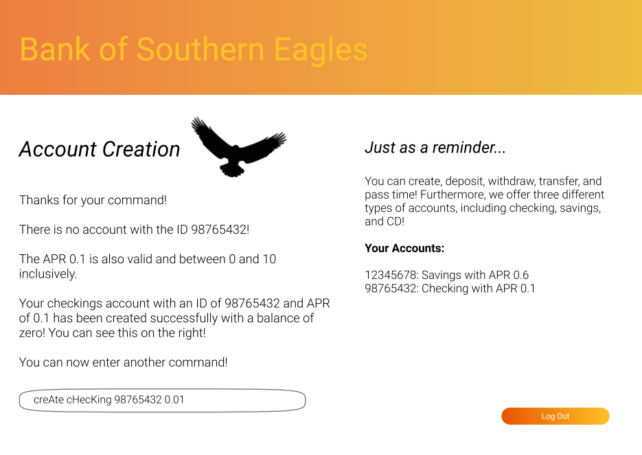
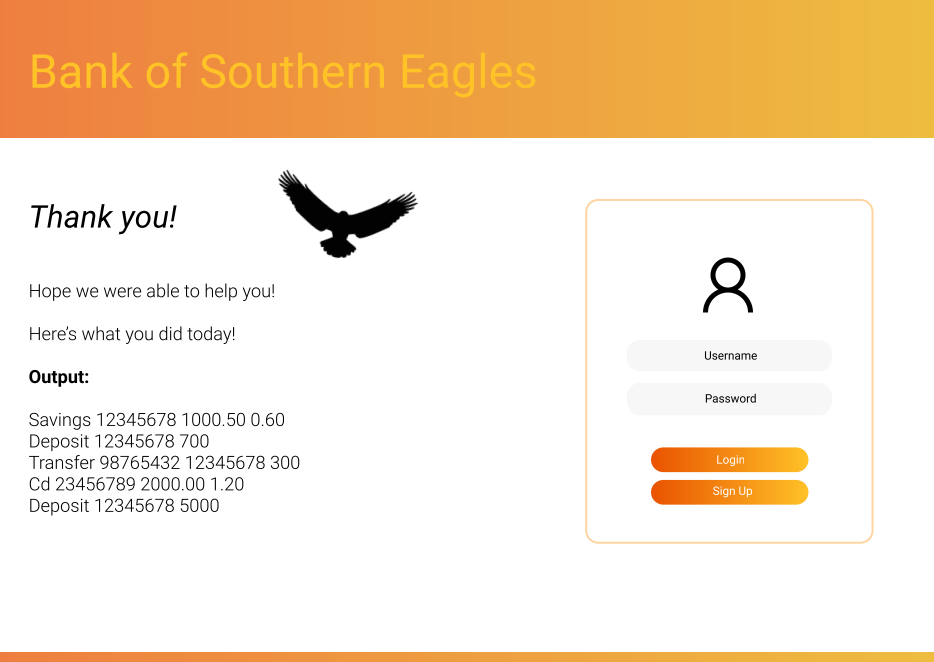
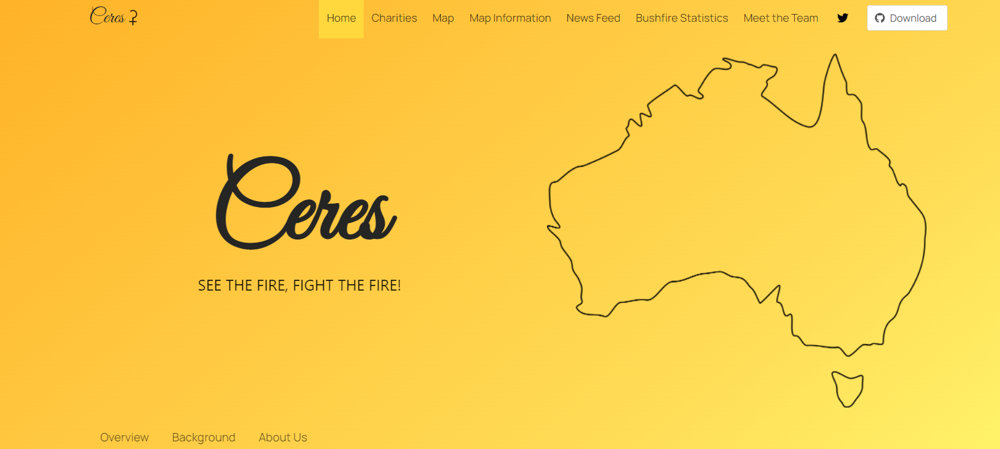
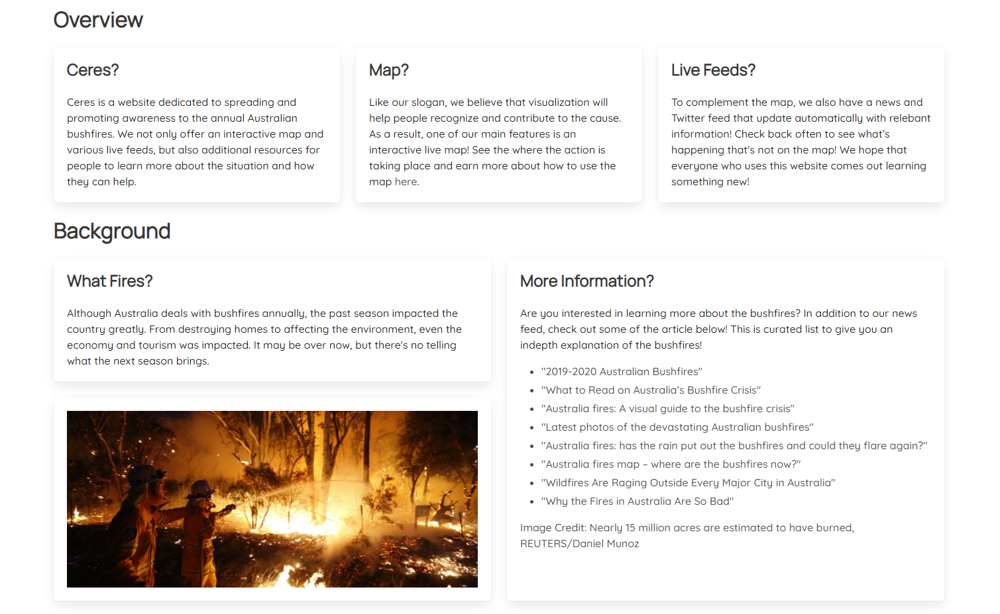

Portfolio
Here's a little sample on what I've worked on in the past!
Bank UI
This is a mockup for a banking project I did last year for a class!
  
Ceres
This was my freshman design project where I led a group to create a website to raise awareness and track the Austrailian wildfires. You can access this site here!
 